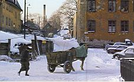
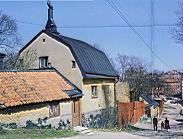

Södermalm i tid och rum. Stockholm
|
 
|

|
- Och en dag flyttade Emmy till mamma. Hon lämnade skolan och började i en ny skola.
Operationen var fullbordad. Och de bodde i ett litet hus med billig hyra inte långt från den stuga,
som en gång hade varit morfars. Det fanns egentligen två hus innanför det höga röda planket. Det
större vette åt den lilla backiga och steniga gatan, det mindre låg inne i trädgården och var
förbundet med gathuset genom ett helt litet komplex av röda gamla bodar.
Och ibland steg Emmy upp på plankets innerkant och stod och såg ut över de omgivande kvarteren. Allt var oregelbundet, allt var sammangyttrat, allt var märkvärdigt. Där fanns som förr små låga röda trähus, där fanns hus med lejongul puts och svarta, svängande vindhuvar på taken. Allt var bara en liten smula mer förfallet än på morfars tid. Och Emmy stod och såg begrundande ut över alltsammans fylld av en egendomlig lyckokänsla och en konstig nyfikenhet.
Gårdsplanen mellan de två små röda trähusen skuggades av en väldig lönn. Och detta träd var verkligen ovanligt stort. Stammen och de tunga grenarna var sotsvarta. Och det sträckte grenarna högt över gathusets tak, skuggade gårdshuset, lyfte det täta grenverket upp mot den höga gula brandgaveln till nästa hus, som bildade en sorts hög fond till det lilla gårdskomplexet, och var under maj månad alltid översållat av små tjocka, gulskimrande knoppar, som blev större och större, allt som tiden led och solvärmen blev hetare. De tycktes svälla av inneboende kraft. Så sprack de.
De små genomskinliga lönnbladen, som var så tunna och spröda och blekt gulröda, vecklades ut, blev guldgula och började växa. Snart var kronan fullövad av tunga, stora och mörkgröna blad. Och under sommarens gång färgades de av damm och sot från skorstenar och fabriker men tvättades oupphörligt rena av regn.
På hösten tog frosten löven. Då blev de röda och gula och lyste i höstsolen. Hela det stora trädets lövskrud var som en stor gyllene bukett högt ovanför de små husen inom planket. Och alltid hördes regndroppars fall som ett tungt smatter. Så började bladen falla om hösten. De dalade sakta med ett lätt prassel till marken. Höststormarna kom, och de rasade ner och lade sig det ena ovanpå det andra och täckte gårdsplanen som en tjock matta, som prasslade under foten. Vid denna tidpunkt tog Emmy sedermera en kratta och en korg och samlade ihop det och bar bort det. Ja, det var i sanning ett underbart träd. Trädgården var ganska stor, men den liknade inte alls morfars trädgård uppe på berget. Det fanns inga plommonträd, ingen schersmin, inga pilar med långa mjuka blad, ingen lummig oreda i Emmy trädgård. Men där växte stora buskage av syrener innanför planket. Och de blommade rikligt om vårarna. Där fanns också en syrenberså vid porten. Och på gårdshuset klängde snart vildvin och klängrosor. Och så fanns ju den stora lönnen.
Gathuset hade gröna luckor för fönstren. Och Emmy gick precis som gamla moster en gång i tiden varje kväll ut på gatan och stängde luckorna, medan hon behändigt steg upp på de skrovliga stenarna utanför. Mamma skruvade innanför till med de väldiga skruvarna, som löpte i fönsterfodret. Porten i planket var alltid låst, och innanför fanns en sluten värld. En ny värld för Emmy. En ny värld inte långt från morfars hus. Men morfar var död för länge sen. Mormor var också död. Men i backen bodde ännu människor, som kom ihåg morfar, som hade känt honom, besökt honom, talat med honom och sett honom stå i verkstaden och gjuta och sjunga visor.
Och Emmy lärde. till slut känna alla dessa underliga människor, som bodde i backen i de små husen. Först hade hon varit lite förvånad, men efter en tid var hon inte förvånad längre. Ingen av dem var något slags märkvärdiga apacher utan helt enkelt fattigt folk, som sökte sig hit för att få en billig bostad att bo i.
Och Emmy steg som sagt ofta upp på kanten av planket, lutade armarna mot det och såg sig omkring i denna nya värld. Medan hon stod där, hörde hon ofta den galna gamla gumman gå och nynna inne i trädgården på andra sidan gårdshuset. Men inne hos trädgårdsmästaren speglade bänkradernas fönster himlens moln, så att det såg ut som om de var fyllda av vatten. Och hos lumphandlaren var allt, dammigt och bråtigt. Hela den väldiga gården var fylld av lump. Där växte inte blommor, där fanns inga träd. Där fanns inte gräs.
Och lumphandlarens hus var ett underligt hus, ett hus, som stod tätt intill en väldig grå brandmur in till korkfabriken och därför såg egendomligt litet ut. Det var ganska högt och smalt och vände två sidor ut mot den stora, bråtiga gården. Och en hög trappa ledde upp till den bruna dörren i väggen, och i väggen fanns bara ett enda fönster, som såg ut, som om det hade kommit dit av misstag. Lumphandlarens hus vände hörnet utåt och hade en väldigt hög skorsten med en vindhuv. Och på den höga trappans steg satt lumphandlarens svärson ofta ute i solen och höll sitt lilla barn på knäet.
Mannen såg egendomlig ut, tyckte Emmy. Hon brukade se honom stå och rota i lumpen, när hon gick in på gården för att hämta vatten ur en kran i brandmuren mittemot stallet. Han var så stor. Han var så oformlig. Hans käke stod ut och var täckt av svart skäggstubb. Och hans huvud var också stort. Han hade svart oredigt hår. Hans skuldror var också väldiga och hans armar långa, och i ändan på armarna satt stora, skovelliknande händer, som säkert var bra att sortera lump med.
Men det lilla barnet var blekt och liknade en källargrodd. Det var, som om det aldrig fått se solens ljus. Det såg ut, som om det alltid hade bott i mörkret och inte vant sig vid ljuset. Det satt så underligt stilla på mannens knä och såg sig med stora, bleka ögon omkring i denna underliga värld av ståltrådshögar och berg av lumpor. Och det lilla barnet hade smal hals och alldeles slätt, tunt, mycket ljust hår, som var ganska långt.
Emmy såg, att den stora mannen inte var farlig. Hans ögon var milt bruna, troskyldiga, lite skumma och fromma som en stor hunds. Och han förde sina stora händer med sådan varsamhet kring det lilla barnet, som om han var rädd att krossa det med händerna, medan han viskade till det. Gud vet, vad han viskade. Han talade nog inte om lumporna, trodde Emmy. Men kanske om de stora hästarna, som stampade i stallet. Eller om blommorna inne i trädgårdsmästarens trädgård. Det lilla bleka barnet satt och vände en trasdocka mellan händerna och jollrade ibland någonting nästan ohörbart.
Det fanns berg av rostig ståltråd på den stora gården. Väldiga högar av plåtdunkar och lårar och tunnor och föremål av järn fanns där. Ja, där fanns verkligen allt möjligt förbrukat och använt avskräde från den stora staden. Det var omöjligt att säga, vad det var eller var det kom ifrån eller vad det skulle användas till mera. Hela denna värld av lumpor var så underlig, så oformlig. Och högst uppe på de väldiga pyramiderna och inne i de skumma skjulen gick lumphandlaren själv, en liten smal och gråblek karl, som köpte tjyvgods och då och då var försvunnen långa tider, när han satt inne.
Inne i ett av de låga skjulen på lumphandlarens gård satt alltid en gammal, gammal gubbe vid en tänd lampa och skrev och protokollförde lump. Bakom den stora glasrutan i den skrangliga dörren till skjulet, såg Emmy alltid den fula gubben avteckna sig mot ljuset från lampan. Små, små skimrande ljussken tycktes sväva kring gubbens huvud. Det var, som om små glänsande ljuspartiklar rört sig fram och åter i ljuskretsen från lampan. Ju längre ut i denna krets blicken nådde, ju sällsyntare blev de små ljuskornen. Det mörknade mer och mer, ända tills det blev så mörkt i de skumma hörnen av det gamla skjulet, att endast skuggor och skymning tycktes dväljas där.
Och gubben förde sin penna långsamt och tålmodigt, medan han kisade ner genom brillorna. Han såg aldrig ut på gården. Han höjde aldrig huvudet. Han satt som i en trollcirkel. Och han var mycket ful. Och särdeles hade då hans näsa ett egendomligt utseende, tyckte Emmy. Ty den var röd och knotig och full av underliga knölar, en dyrbar näsa, en i sitt slag storartad näsa, en originell näsa, som skapad för en målare att måla.
I den underliga bruna och gulskimrande skymningen, vars mörker tätnade i vrårna men ljusnade kring lampan, skymtade gubben med näsan, ständigt lutad över sitt bord, sysslande med att skriva någonting. Kanske han inte protokollförde lumporna. Kanske han skrev någonting helt annat. Emmy kunde aldrig riktigt komma underfund med, vad det egentligen var. Kanske han i denna lumpiga och underliga omgivning skrev underliga och skräckinjagande berättelser om lump. Kanske han beskrev, hur man gömde lik i de gamla lårarna och giftiga drycker i de stora, svartblänkande och spindelvävsomspunna damejeannerna på gården. Kanske gubben med näsan var ett slags doktor Jekyll, som satt där inne och ruvade över konstiga kemiska formler och under tiden hade förvandlat sig till mr Hyde.
Inne hos trädgårdsmästaren växte emellertid blommor på långa snörräta sängar. En hejdlös massa blommor, som var till salu. På somrarna ringrosor, lejongap och liljor. Om höstarna dalior och fjäderliknande astrar i alla upptänkliga färger.
Och det doftade så egendomligt från lumphandlarens gård. Det doftade från stallet, där de stora åkarhästarna stod och stampade. Och det doftade från lumphögarna, en torr och underlig doft. Och dofterna från blomstersängarna blandades med odörerna från lumphandlarens gård och korkfabrikens skorstenar till en mycket märklig lukt, en högst ovanlig och originell lukt, som man på sätt och vis behövde sakkunskap för att kunna dissekera upp i sina beståndsdelar.
Emmy stod på planket med armarna stödda mot kanten och såg långt nere i backen de stora almarna och lönnarna på den obebyggda tomten. Och genom deras grenverk skymtade fjärden och Riddarholmskyrkans gracila och genombrutna torn av järn. I trädgården bortom gårdshuset gick den galna gumman klädd i en urblekt gammal studentmössa och rensade och sjöng med gäll, lite klagande stämma, en underlig refräng, en monoton fattigmansrefräng med brustet ackord.
Men Emmy var mycket praktisk. Och hon hade blivit så energisk numera. Hon och mamma samtalade om komplexets möjligheter. De upptäckte, att man mycket väl skulle kunna utöka de skrala inkomsterna med att hyra ut ett litet rum på vinden i gathuset. Det fanns nämligen ett sådant där uppe. Det var ett litet propert rum, inte tu tal om den saken. Det hade rosiga tapeter, och från fönstret såg man över syrenbersåns lummighet ut över väldiga kvarter av gamla hus liksom staplade över varandra. Små låga hus som var röda. Lite större hus med lejongul puts. Och ännu större hus, vars brandmurar var mycket höga och såg hemlighetsfulla ut, därför att de naturligtvis saknade fönster. Och så väldiga hyreskaserner.
Men alla dessa hus fanns inte i den gamla backen, som nedanför fönstret skulle föreställa en gata och ledde förbi trädgårdsmästarens trädgård ner mot det lilla torget och bron. Nej, de tornade upp sig ganska långt borta på andra sidan. Uppfartsvägens väldiga klyfta. Och under mörka kvällar såg man de många upplysta fönstren i de små och stora husen. Det var, som om ett stort underligt och oregelbundet berg av hus hade rest sig mot natthimlen. Och i bergets alla fönster lyste det.
Det doftade lavendel i det lilla rummet. Ty en gammal fröken hade bott där i hundra år eller kanske det bara var i tjugufem. När Emmy och hennes mamma hyrde huset, var den gamla fröken ovettig. Hon skulle inte få bo kvar, och hon hatade inkräktarna. Och har man bott hundrafemtio år på samma ställe, får man sina vanor. Den gamla fröken hade fått sina vanor. Hon bodde mycket trångt inom sin bestämda cirkel, och hon kunde inte tänka sig möjligheten att flytta den med sig till någon annan plats på jordklotet. Även om hon själv skulle vara medelpunkten. Den gamla fröken doftade lavendel, och hon var smal och mager och rentvättad, och man sade att hon hade pengar på banken. Hon umgicks inte med någon i backen, och hon gick i kyrkan på söndagarna.
När mamma och Emmy sade, att de hade hyrt, och att hon måste flytta, kände hon det, som om hennes död var nära förestående. Och när inkräktarna efter uppläsandet av sitt ultimatum gick sin väg, skyndade hon ut på vinden, lade sig på mage på golvet och såg nedåt backen efter de bortskyndande. Varför, hon gjorde det är svårt att förstå. När Emmy vände sig om, såg hon den gamla fröken titta ut genom det lilla fyrkantiga fönstret, sträcka på halsen och följa dem med blicken. Hon hade vit schalett knuten under hakan och lång, spetsig näsa och liknade på något sätt den elaka häxan, i pepparkakshuset. Hon såg ut, som om hon läste besvärjelser mellan tänderna. Men när hon såg, att Emmy betraktade henne, drog hon hastigt in huvudet i lådan och var försvunnen.
Nu hade emellertid den gamla fröken försvunnit med sitt pick och pack. Och man övervägde inte, om förlusten av en eventuell hyresgäst i hennes person hade varit bra eller illa. Man satte in en annons, och dessförinnan hade Emmy gjort djupgående matematiska undersökningar om hyrors storlek och beskaffenhet. Hon hade räknat ut dem i brutto och netto. Och trots att hon alltid varit skral i matematik, hade hon kommit till det resultatet, att företaget skulle bli vinstgivande.
10
Men livet hade naturligtvis ändå sina besvärligheter. Många av dem berodde av tiden. Och i backen blev dessa besvärligheter pittoreska och fick ett egenartat, putslustigt behag, som förefaller roligare på avstånd än då de genomlevdes.Det var till exempel mycket svårt att inte ha elektriskt ljus. Inte en enda en av de fattiga stackare, som bodde vid denna lilla backiga och steniga gata i södra bergen åtnjöt vid denna tid en sådan förmån. Man eldade med karbid. Och denna nyttiga vara var svåråtkomlig. Man måste stå i kö vid de små lamp- och fotogenaffärerna för att få sådan. I dessa köer stod det naturligtvis bara fattigt folk: små gummor med bleka, oroliga ansikten, arbetarhustrur med bister uppsyn och kassar i händerna och en del originella individer som man med ett folkligt uttryck brukar kalla för ledighets¬ kommittén. (En sådan ledighetskommitté avskiljer sig som bekant inom alla befolkningslager, från de socialt välplacerade och uppnosiga element, som har kapital, ända ner till grändernas interner.) Där stod också unga, bleknosiga studerande och hängde under det första världskrigets bleka gryningsgrå morgnar eller under begynnande skymning, när lyktorna snart tändes. Karbidkön hade sin alldeles särskilda sammansättning. Det är i sådana köer man finner revolutionär intelligentia.
Emmy stod också i karbidkö. Detta sagt utan att på minsta vis vilja påstå, att Emmy vid denna tid var särskilt revolutionär, kanske inte ens särskilt intelligent. Men hon måste absolut ha lyse, när hon läste läxorna.
Ibland hände det verkliga karbidtragedier. Den vanligaste karbidtragedien var naturligtvis den, då man tomhänt måste gå sin väg med den framtidsutsikten att sitta vid brasan och skriva krior. Mången gång stod det då en vänlig själ ett stycke från kön, villig att dela med sig av sitt ljus. Den därnäst hemskaste tragedien var den, då påsen gick sönder, och karbidinnehållet föll i rännstenen. De små grå och underfundiga bitarna började genast puttra och fräsa och suga åt sig vatten, utspyende en underlig, nästan perverst obehaglig stank. Under tiden förvandlades de så småningom till aska. Det gick sålunda inte att försöka plocka upp dem, ty detta var en fysisk eller kanske snarare då en kemisk omöjlighet. Dessutom alstrades värme.
Ack, hur många gånger stod inte Emmy som medsörjande vid en sådan karbidgrav. Man spelade inte någon marsch funebre, men hon kände starkt, att en tragedi utspelades inför hennes ögon och så att säga inför öppen ridå: En och annan stannade och stirrade några ögonblick, undrande vad det var för någonting, som tilldrog sig här i gatulivet, men retirerade dock hastigt och försvann, hållande sig omkring näsan.
Den välsignade lilla karbidanhopningen liknade en krater i miniatyr. Det jäste och puttrade i den. Den utspydde förfärlig stank. Den ändrade form varje minut. Något stackars litet barn stod kanske bredvid och tjöt i högan sky och brände sig, när det försökte peta undan några små karbidstycken och rädda dem undan förgängelsen. Eller också var det någon liten gumma i persisk schal, som hade så ytterligt darrande händer, att de inte längre förmådde hålla kvar någonting med bestämdhet under det flyende livets gång, inte ens en karbidpåse.
Emmy satt många kvällar och skrev kuvert och läste läxor vid karbidlampans vita sken. Då och då sjönk lågan plötsligt ner och blev så liten som ett knappnålshuvud och fick en ovänligt likblå och giftig färg. Allt i det låga rummet försvann i dunkel och skymning. Bokens bokstäver blev oläsliga. Ur vrårna steg skuggorna fram.
Emmy såg med stränga och genomträngande blickar på den lilla grå lampan. Den hade ett obehagligt utseende, som om den var ämnad för en tvångsarbetsinrättning eller ett tukthus. Den var het, som om en helvetesbrygd kokade inuti den. Då och då kom små puffar av gas, som doftade ondskefullt. Dess beteende var dramatiskt laddat, och Emmy väntade sig, att den när som helst skulle explodera. Den föreföll dock egendomligt oberörd av hennes blickar. När hon talade till den, var den likgiltig. Hon tog den då och skakade den omilt, men den svarade med att bubbla och fräsa ovänligt. Ibland måste hon kasta ut den genom fönstret på gården under den höga lönnen. Det lugnade i viss mån den konstiga tingestens upprörda känslor. Men när hon om en stund gick ut för att hämta in den, hade den samma oberörda min som före lynnesutbrottet.
Emmy satt ibland och såg bort mot fönstret mittemot. Där bodde en skräddare och hans unga hustru. Både skräddaren och hans hustru brukade sitta och sy hela dagarna. Ibland tog han det färdigsydda med sig på armen och bar bort det under ett brunt perkalskynke. Han var enbent och ful, men hans unga hustru var vacker och hade ett docklikt utseende.
Alldeles utanför skräddarens fönster fanns en fotogenlykta, en reminiscens från den lyckliga tid, när själva huvudstaden var en småstad, folk åkte i hyrvagn, och damerna hade långa kjolar försedda med plyschkanter och underkläder med vita brodyrer. Varje vinterdag vid reglementerad tid, och vår, sommar och höst utom under de så kallade vita nätterna kom lykttändaren med ett långt spö i handen och tände backens lyktor. Först tände han lyktan nere vid det lilla torget med pumpen. Så avancerade han i snabbt tempo till det gula trähuset vid trädgårdsmästeriet och tände den lyktan. Så kom han till skräddarens lykta. Och allra sist koin turen till den sista lyktan uppe vid backens krön. Den hade en nästan dramatiskt välplacerad plats med utsikt uppåt bergen och nedåt backen. I huset mittemot den bodde backens sköka, en vindögd och ful och fet flicka, som ingen tyckte om. Under skumma vinterkvällar stod backens sista lykta där uppe på krönet och avtecknade sig mot vinterhimlens stjärnbeströdda dunkel. Den belyste den lättfärdiga flickans dörr, och ljuskoronan kring dess lampa såg lika romantisk ut, som den vindögda flickan var oromantisk.
En gång i veckan hade lykttändaren stege med sig. Han var då iklädd blått förkläde, och han steg ledigt och elegant upp på stegen, sedan han först hade stöttat den väl mot den lykta, som just då var aktuell, och så gned han glasen invärtes och utvärtes och spottade ibland nitiskt på trasan. Så undersökte han med huvudet på sned lampan och fyllde på den och putsade veken. Emmy stod i fönstret och såg avundsjukt på honom. Hon undrade, om det skulle vara att anse som ett brott, om en fattig ung studerande flicka en mörk natt klättrade upp på en lyktstolpe och i all hemlighet och utan att någon såg det, stal en smula fotogen för sin studielampa. Hon föreställde sig hela brottet i dess förfärliga realitet: de smygande stegen, de osäkra blickarna, det onda samvetet och det bultande hjärtas oro. Och sedan de stegrade samvetskvalen i deras olika stadier, som skulle komma henne att se skuldmedveten ut och rodna som en tömat varje gång hon mötte polisen eller lykttändaren.
11
De komplicerade själsliga äventyren, som hon anade, kom henne att avstå från alltsammans. Men det hindrade inte, att hon fortfarande iakttog lyktan utanför skräddarens fönster med samma grubblande blick som förut. Hon undrade över dessa livets tillfälligheter, dessa slumpartade förhållanden, som är så förfärligt bittra att begrunda. Varför hade man till exempel inte placerat lyktan utanför hennes fönster i stället för hos skräddaren. Skräddaren kunde förvisso inte sy en söm vid det ljuset, men Emmy skulle mycket väl ha kunnat suttit på fönsterbrädan inne hos sig själv och läst glosor i lyktans sken. Orättvist. Orättvist. Men å andra sidan visste hon med sig själv, att hennes uppmärksamhet skulle ha blivit störd av dramatiska händelser, om hon hade tillbringat sina kvällar för öppna fönsterluckor. Skräddaren var visserligen i sig själv inte särskilt dramatisk. Hans träben gav honom en oregelbunden, svajande gång, som om han tagit sig fram på ett halt däck under en storm på Karibiska havet, men dramatisk var han inte. Hans unga hustru var alltför saktmodig, knust av livets besvärligheter och anständig för att vara medagerande i ett drama.Men däremot var brännvinspannan desto mera fylld av inneboende aktionsförmåga. Ty skräddaren hade en brännvinspanna. Emmy visste det. Alla i backen visste det. Och i synnerhet visste alla, som tillhörde ledighetskommittén i kvarteret, att det var så.
Emmy hade tittat efter i Grimbergs historia, hur en brännvinspanna var konstruerad. Hon visste, att det fanns en period av vårt folks historia, när böndernas och även mindre väl besuttna lantbors hus var försedda med brännvinspannor. Dessa hade en invecklad konstruktion. Någonting måste först uppvärmas häftigt för att sedan avkylas lika häftigt. Och resultatet av det hela blev vanligtvis, att det ämne, som producerades, var helt annorlunda än vad man stoppat in i apparaten från början. Det var mycket invecklat alltsammans.
Emmy såg ibland medlemmar av nyss nämnda ledighetskommitté stå nedanför skräddarens fönster under skumma kvällar, medan de ined darrande stämmor bevekande bad skräddaren om en liten, liten droppe. De stod där alldeles stilla och trånande i skenet från den välsignade lyktan och såg upp mot fönstret med ivern hos en älskare.
Emmy såg dem och tyckte, att det var hemskt att tänka sig, att människan kunde bli så hemfallen åt sina passioner, att all blygsel, all anständighet, all försiktighet och värdighet försvann som rök för vinden. Men hon dömde dem inte. Deras ständigt återkommande besök ökade hennes nyfikenhet på tillvarons märkliga egenheter, och hon slog upp i BOKEN och läste högtidligt följande stycke:
"Att människor, som äro så och så beskaffade, måste handla därefter är ju nödvändigt. Vilja att det vore annorlunda är som att vilja, att fikonträdet icke skall ha någon saft."
En dag blev brännvinspannan, som på sätt och vis hade vissa själsliga likheter med Emmys karbidlampa, så fylld av motstridiga känslor, att den plötsligt med buller och bång kom utfarande genom skräddarens fönster. Rök och sotdunster bolmade ut; lågor slog ut genom de trasiga fönsterrutorna och slickade väggarna. Efter en stund kom också skräddaren ut, hängande i fönsterbågen med ena handen, fäktande vilt med träbenet, sotig och med avsvett skägg och vild blick.
Det var en kritisk händelse i backens historia. Och det är ännu outrett, om brännvinspannan av sig själv hamnade mitt i vägstråket eller om skräddaren först kastade ut den och därpå slängde sig själv ut. genom fönstret. Alltnog, Emmy och kanske även andra såg den stinkande, sotiga och underliga tingesten ligga där som ett farligt bevis på den rörelse, som bedrevs inom kvarteret. Hon betraktade den fascinerad och väntade varje ögonblick att någonting nytt skulle hända. Ambulansen skulle komma tätt följd av brandkåren och polispiketen, och sedan skulle backen under evärdeliga tider vara deklasserad offentligt och införd i polisannalerna som ett farligt ställe bebott av apacher.
Men ingenting av allt detta inträffade. Skräddaren hängde en stund i fönstret med en arm. Så damp han till marken, linkade fram, tog hastigt pannan och skyndade in genom porten i planket och var försvunnen. Hans vackra och fromma hustru tvättade fönstren och efter en stund satte man in nya fönsterglas. Och allt var åter lugnt i Schipkapasset. Under vinterns skymningskvällar störde ett och annat litet slagsmål tystnaden. Utanför skräddarens port såg Emmy stundom en hel del mänskliga individer ligga i en hög och stöna, sucka och sparkas. Den ena låg ovanpå den andra, och de rullade under en nästan hemsk tystnad runt med varandra, medan klädespersedlar ändrades och dova svordomar hördes.
Emmy stod på kanten av planket och darrade, dels av förskräckelse, dels av upptäckarglädje. I sanningens namn måste sägas, att det låg mera upptäckarglädje än uppriktig skräck i hennes sätt att iakttaga det sällsamma skådespelet. Sju, åtta sammanvecklade manliga individer låg i skuggan av planket och belystes sparsamt av fotogenlyktans milda sken. Porten var väl låst, planket var högt, och i skydd av syrenbersåns risiga grenar visste ingen om hennes existens, en idealisk uppehållsort för en iakttagare. Hon var så att säga på första parkett och mitt uppe i händelsernas gång utan att själv engagera sig. Hon gick udenom.
Det föreföll henne, som om männen inte egentligen var bekajade av någon verklig ilska utan endast motionerade för att de hade lust att motionera. I början hade de visserligen haft ett motiv, men under motionens gång glömde de bort det. Ovanpå allesammans låg skräddaren och vinkade med sitt träben.
Emmy steg plötsligt ner från planket och gick in till fru Gumpert.
- Det ligger åtta sammanvecklade karlar utanför porten, sade hon bekymrad. De håller på att
slå ihjäl varandra.
Fru Gumpert såg upp från arbetet lite likgiltigt. Jaså, sade hon.
- Det ser hemskt ut, försökte Emmy på nytt.
- Gör det, sade fru Gumpert frånvarande. Å, det är nog inte så farligt. De reder nog upp det.
Hennes intresse var påfallande obetydligt. Hon förstod Emmys motiv, men hon kände sig
ändå inte övertygad om att man borde ingripa på något sätt. Trots allt ringde hon ändå till
polisen.
Emmy skyndade åter ut i syrenbersåns skymning. Backen låg i mörker. Högst upp utanför skökans dörr stod den ensamma lyktan med sin skimrande ljuskorona och avtecknade sig mot den mörka, stjärnbeströdda himlen. Skådespelet var alldeles likadant som nyss, endast med den skillnaden, att skräddaren nu inte längre syntes. Men hans träben stack fram under de övriga. Inte en levande själ syntes till. Backen låg som utdöd. Kanske det var en slump, kanske man också av strategiska och andra skäl höll sig undan. Nere på det lilla torget med pumpen och över bron vid Uppfartsvägen härskade ett diffust ljus, som dels härrörde sig från lyktorna djupt nere i viaduktens stenschakt dels från de höga gamla hyreskasernernas många fönster. Men i skuggan av planken härskade blå skymning, en diffus men inte obehaglig skymning.
Långt där nere på det lilla torget uppenbarade sig plötsligt två kraftiga satta män. De gick sida vid sida. De gick mycket långsamt. Det var poliserna. De skyndade sig inte. De förhastade sig inte. Emmy följde deras långsamma avancerande med spänning. Plötsligt började den oroliga och krälande massan på marken röra sig åt sidorna. Det såg ut, som om man långsamt och sen mera brådskande krälade åt sidorna och försökte lösgöra armar och ben. Skräddaren dök upp och kastade sig ljudlöst in i porten och försvann. Utan att Emmy visste, hur det hade gått till, avdunstade några andra individer i gränden mellan trädgårdsmästarens och Emmys plank. När poliserna kom fram, stod bara två mörka och beskedliga skepnader kvar i hörnet, lågmält samtalande om kvällens stilla skönhet. Och de satta, bredskuldriga männen var så ohyggligt lugna. De var så trygga och starka, och de hade lagens tyngd bakom sig. De stannade.
- Var det något? sade de lugnt och liksom i förbigående.
De två kvarvarande individerna skelade lite osäkert. - Nää, säger den ene med ihålig stämma. Nä, dä va inte något.
Och då går de bredskuldriga männen långsamt och tryggt sin väg sida vid sida. Men de tilltufsade och oborstade individerna slinker som dimfigurer undan åt andra hållet och blir borta i skymningen. Backen ligger tyst. Det är, som om en samling jordevarelser plötsligt hade visat sig vid ytan av jorden för att sedan helt tyst och som skuggor försvinna och bli borta.
Emmy gick in och fortsatte att läsa. Men hon hade lagt märke till, att sådana händelser störde koncentrationen. Hon hade visserligen blivit van vid att vardagen här uppe hade vissa olikheter med vardagen till exempel i Diplomatstaden, men det fanns ändå gränser för själens förmåga till begrundan och utestängande av den omgivande verklighetens störningar.
12
En tid efter sedan skräddarens brännvinspanna hade exploderat, inträffade två händelser, som i sig själva var obetydliga, men ändå fick vittgående följder. Den första bestod av en olyckshändelse med en lampa. Den andra var en snickare, som infann sig hos fru Gumpert för att justera dörrar.Lampan var lilla Öhmans. Och händelsen bestod i att lilla Öhmans flicka knuffade ner den från bordet, så att gardinen fattade eld. Och när den lilla flickan såg lågorna slicka väggen, rusade hon full av fasa in till ogifta Bergkvist, som var hemma och fullt nykter. Och gumman släckte elden med en spann vatten.
Tre dagar senare var det mycket kallt, eftersom det var på vintern, och ogifta Bergkvist hade inte någon ved att elda med. Och hon kände sig mycket nertyngd. Och naturligtvis skulle den förbaskade värken mellan bröstet och magen infinna sig just då. Kanske för att hon frös.
Vintern i backen var helt annorlunda än sommaren. Den leende idyllen bleknade bort, och allt föreföll ödsligare och mera påtagligt. Syrenerna stod kala. Lönnen inne på Emmys gård var också kal och sträckte sina nakna svarta grenar högt över husens tak och vajade för vintervinden med melankoliskt brus. Det blommade inte några blommor inne hos trädgårdsmästarens, och bellis och solrosor fanns inte längre vid husen innanför planken.
När all sommarens förtjusande rekvisita på så sätt var försvunnen, upptäckte man genast mycket bättre årens flykt. Det var som att upptäcka tidens obarmhärtiga spår i ett älskat ansikte. Man blev lite besviken, och ändå sade eftertanken mycket lugnt ifrån, att det helt enkelt måste vara så.
Puts hade, ramlat från väggarna. Planken såg en smula gistna ut. Vindhuvarna gnisslade melankoliskt. Då och då kom en ung man med en säck ved på ryggen och bar in den och stjälpte innehållet i fru Gumperts vedbod. Veden var ovanligt dyr dessa år. Fru Gumpert satt och skrev med en het tegelsten under fötterna. Det blev snö på den lilla gårdsplanen. Det låg snö över trädgårdssängarna. Det blev gulvit svallis i rännstenen utanför. Och mörka kvällar syntes på andra sidan Emmys trädgård och bortom planket ett lågt lejongult hus belyst av en enda lykta. Strax invid låg det mörka portvalvet in till lumphandlarens gård. Och Emmy såg, hur lyktan belyste den lejongula muren, där rappningen delvis var bortfallen, så att det röda teglet lyste fram. Och ljuset från lyktan sökte sig helt tvekande in i det skumma portvalvet, darrade över den gula väggen och kom syrenbuskarna , inne i Ernmys trädgård att avteckna sig i mörk silhuett mot husets belysta vägg.
Sommarens livfullhet var försvunnen. Och det satt aldrig några kortspelande individer i skuggan av planken. Och man spelade varken munspel eller gitarr. Kylan kröp in genom fönsterfodrens springor, sökte sig in vid gistna dörrar och kylde under låga golv. Och nere på fjärden frös vattnet till is, och man lade ut flottbron. Och mitt under denna vinterns anstormning uppenbarade sig ogifta Bergkvist med sin välsignade bröst- och magvärk. Gumman satt på pallen vid dörren och började sin vanliga svada. Nu hade hon inte bara värk i bröstet utan nu frös hon också så förfärligt. Och hon hade helt enkelt glömt bort att köpa ved. Det var verkligen oförlåtligt, men hon var så tankspridd nuförtiden. När hon var ung, hade hon aldrig varit tankspridd. Men hon började bli gammal nu.
Och till råga på allt hade det ju blivit så kallt. Det drog och blåste här uppe på berget. Luften blev visserligen frisk, men man kan ju inte bara leva av frisk luft. Stans gamla kåkar var verkligen inte beboeliga. Eller vad tyckte Emmy och fru Gumpert om saken? När man frös så där, brukade det hjälpa, om inan fick något starkt. Om fru Gumpert möjligtvis hade... Lite starkt brukade ha en förunderlig förmåga att värma så skönt.
Jo, det kunde nog hända. Fru Gumpert medgav det, men om fröken Bergkvist frös, skulle hon få några vedträn med sig hem i förklädet. Veden var dyr, men nog kunde fru Gumpert avstå några vedträn åt fröken Bergkvist. Ogifta Bergkvist försökte att opponera sig. Men hennes ord hade liksom ingen kraft. Å ja, hon medgav det, de fattiga fick lov att hålla ihop. Fru Gumpert var god som guld. Dessutom var hon en dam. Hon var inte så dum, att hon inte begrep, att fru Gumpert och Emmy var herrskap. Det var satans synd, att de skulle behöva bo i de här slumkvarteren.
Och så berättade gumman livfullt om händelsen med lilla Öhmans karbidlampa. Hennes uttryckssätt hade en målande drastisk prägel. Hon var inte särskilt upprörd över eldsvådan utan snarare uppfylld av den dramatiska roll hon själv hade spelat i den, när hon med snabbhet och stor intelligens hade räddat huset från att brinna upp. När hon gick, följde Emmy ined henne ut i vedboden och plockade ett fång vedträn i hennes förkläde. De stod där ute i vedbodens mörker, och Emmy lade vedträna ett och ett i ogifta Bergkvists förkläde. Det blåste lite snålt. Det susade i lönnen. Uppe i lilla Öhmans fönster lyste ljus. Men ingen av dem hörde den galna gumman sjunga. Och det var tyst så när som på bruset från trafiken nere på de riktiga gatorna.
När ogifta Bergkvist hade gått, talade Emmy och hennes mamma länge om händelsen med lampan. De tyckte inte alls, att det var en obetydlig händelse. Det var tvärtom en ganska viktig tilldragelse, som hade kunnat f å oöverskådliga följder. Hela huset kunde ha brunnit upp. Hela backen kunde ha gått upp i rök. I och för sig kanske det inte hade varit en så stor förlust, men var skulle alla fattiga människor egentligen bo, om det inte fanns sådana här gamla hus vid backiga gator i bergen?
Efter en tid började fru Gumpert besöka varje hus i backen i tur och ordning. Hon kände nästan alla förut. Hon hade talat med dem och visste, hur de hade det. Och alla visste, att hon hade bott i backen som barn, och att hennes far hade varit den gamle vitskäggige gipsgjutaren som en gång hade bott i det gröna huset längst upp i backen.
Och under denna konstiga och omväxlande turné följde Emmy ibland med henne. Och fru Gumpert försökte övertyga alla om nödvändigheten av att inte längre använda karbidlampor. Man skulle bara vara solidarisk och samla sig kring tanken, så skulle de styrande vekna och giva dem alla det lyse, de så väl behövde.
Den första de besökte var en manhaftig svartkrullhårig fabriksarbeterska. Hon gick som en karl och hade en djup, mörk stämma full av liv och arrogans. Hon såg mycket beslutsam och imponerande ut. Hon bodde tillsammans med en liten blek arbetslös bagare, som var hennes fästman. I vinterkalla kvällar, och även under mindre kalla kvällar kanske, brukade hon ofta köra ut sin son. Hon körde ut honom och låste dörren väl för att få vara ensam med sin bagare. Hon ville utan besvärande vittnen njuta kärlekens och sömnens nöjen tillsammans med bagaren. Hennes rum uppfylldes till stor del av en väldig tvåmanssäng full av bolstrar, täcken och kuddar. Och bagaren satt vid bordet och såg lite kväst och betänksam ut och betraktade Emmy och hennes mamma, när de kom in. Den manhaftiga fabriksarbeterskan såg stelt och obekant på dem.
Men fru Gumpert, som antog, att alla här uppe kände henne, presenterade sig inte utan började strax hålla sitt lilla tal. Hon hade tänkt igenom det noggrant. Hon hade inte givit det någon alldeles avslutad form utan där fanns möjligheter till improvisation. Hon litade då på sin ingivelse, och talet antog karaktären av ett vädjande, som borde ha kunnat gå direkt till hjärtat. Hennes ordval var enkelt, hennes ton anspråkslöst lugn. Hennes framträdande präglades inte på något sätt av överdrifter i känsla eller formuleringsförmåga.
Hon talade om karbidens doft, dess allmänna utseende och egenskaper och om karbidlampors nyckfullhet och karaktär. Hon beskrev i synnerhet dessa lanspor med välberäknad saklighet, så att den lyssnande riktigt med vämjelse med ens skulle känna och förstå, att ingen skapad själ borde äga och nyttja ett sådant föremål.
Sedan kom hon så att säga till höjdpunkten i framträdandet. Hon började beskriva händelsen med lilla Öhmans lampa och de ödesdigra följder, som denna kunde ha fått. Allra sist kom hon till sens, moralen: det elektriska ljusets välsignelser. Och i eldiga ordalag beskrev hon alla möjligheter, som väntade dem, om de fick ett sådant lyse, en sådan enastående ljusmöjlighet i backen.
Emmy stod bredvid och hörde på med spänning. Det kändes som ett slags premiär. Man kunde inte alls veta, om det skulle bli succé. Allt berodde på publikens reaktion. Och Emmy såg med oro och hjärtklappning på fabriksarbeterskans stela och reserverade ansikte. Ingenting av fru Gumperts tal tycktes ha inverkat på henne. Hon var helt oberörd av beskrivningen på en karbidlampas sadistiska egenskaper. Och hennes ansikte sken inte upp av oväntat hopp inför elektricitetens Välsignelser. Det var nästan konstigt.
När fru Gumpert hade talat sig varm, teg hon och väntade på svar. Men det kom inte något omedelbart svar. Bagaren bara hostade lite och flyttade oroligt på fötterna och gned sig på hakan och satt där och hängde och tittade glosögt och ointresserat. Kvinnan lämnade spisen, där hon stått hela tiden och gick och satte sig vid bordet. Så drog hon ihop munnen lite och sänkte ögonlocken som löv över ögonen. Och så började hon sticka. Stickorna slamrade mellan hennes fingrar, munnen snörptes mer och mer ihop, och hennes mörka manhaftiga ansikte såg sfinxlikt ut. Och Emmy tyckte, att tystnaden var olycksbådande. Premiärnervositeten hade henne helt i sitt grepp.
- Jag tycker karbid är bra, jag, sade kvinnan buttert efter en stund. Den duger bra, tycker jag. Och HAN. Hon gjorde en nick med huvudet bort mot bagaren. HAN tycker också att karbiden är bra. Har man en bra lampa, behöver man inte bära sig så där larvigt åt som fröken Öhman. Men det kan ju var och en se, att hon är si så där sjåpig av sej.
Emmy drog andan. Fru Gumpert drog också andan. Hon trodde inte sina öron. Och hon gick fram i rummet beredd att fortsätta med en diskussion, när inledningsanförandet nu var avverkat. Emmy följde med och slöt upp vid hennes sida med stor solidaritet. Just då såg kvinnan upp. Hennes blick föll på fru Gumperts ansikte. Hon ryckte överraskad till. Så gled hennes blick snabbt över på Emmy och så tillbaka på fru Gumpert igen.
- Kors, det är ju fru Gumpert, utbrast hon. Och jag, som inte såg, vem det var. Jag som trodde, att det var en sån där välgörande dam, som det brukar springa här oppe i backen ibland, Herregud, Artur, sätt. fram en stol till frun. Och till fröken Emmy. Ja, det är klart, att jag ska skriva på listan. Det är klart det. Fattas bara annat. Det är klart vi ska ha elektriskt. Det som är så bra. Artur, sätt fram stolar vetja. Skynda dej ! Jaa, dom där karbidlamporna är väl det värsta astyg, som finns. Det har jag alltid sagt. Och så skrev hon på listan. Och fru Gumpert fortsatte sin vandring.
13
Det fanns så mycket människor i backen. De bodde allesammans i dessa små låga hus omgivna av plank- och trädgårdar. De arbetade på fabriker. De sköljde flaskor på bryggeriet. De arbetade med små glödlampor. De satt och sydde, hukade vid karbidlampors sken. Gamla gummor satt darrhänt och stickade. Gamla orkeslösa gubbar vände försiktigt bladen i sin tidning. De såg upp och stirrade först lite främmande på fru Gumpert och Emmy men såg sedan strax vilka det var som kom. Fru Gumpert varierade sitt lilla tal. Hon förändrade det efter råd och omständigheter, men huvudinnehållet var naturligtvis hela tiden detsamma.Där fanns den lilla svartklädda gumman, som bodde.i samma hus som ogifta Bergkvist. Ogifta Bergkvist beskyllde henne för att ha en älskare. Hon hette fröken Bock eller någonting i den stilen. Hon hade varit barnjungfru i rika och kanske också fina hus. Hon var liten och mager och såg sockersöt ut. Hon var tandlös och smal i ansiktet som ett löv. Varje dag kom hennes uppvaktande kavaljer uppstul¬ tande från arbetsinrättningen nere vid järnvägen för att dricka något slags kaffesurrogat tillsammans med henne och skvallra bort en liten behaglig stund.
Då talade fröken Bock om sina "barn". Hon talade om, vad de hade blivit, och hur gamla de var. En del var män i staten och redan en smula tunnhåriga och hade embonpoint, men de var ändå hennes barn. Hon talade med glädje om dem, som hade lyckats i livet. Och med sorg om dem som misslyckats.
Under tiden stod kaffepannan på och puttrade. Och dess doft trängde genom dörrspringan ut i trappan och vidare uppför gloffet till vinden, där ogifta Bergkvist kände den sticka i näsan. Hon retade sig åt den och tyckte, att den förpestade trappan, vinden, ja, nästan hela huset. Den var för resten löjlig. Helt och hållet löjlig. Och där nere i sitt rum satt fröken Bock med sin älskare och såg erbarmligt sjåpig ut med sitt sockersöta leende och hade en spetsjabot i halsen och en guldbrosch. Och på byrån stod långa rader med porträtt av hennes "barn".
Min Gud, för att vara en älskare var den gamle herrns från arbetsinrättningen utseende oskyldigt och hans ålder i jämnhöjd med Abrahams. Ty han var en liten gubbe med långt vitt skägg, klädd i alldeles för stor rundkullig svart hatt. Och han kom stultande med käpp i handen och hade en from och barnslig violblå blick.
Där fanns också den fattiga sömmerskan, som var lytt och hade värkbrutna händer och gick på hälarna på ett så löjeväckande sätt, att Emmy måste stoppa en näsduk i munnen var gång hon mötte henne för att inte falla i hysteriskt skratt. Ett sådant skratt skulle ha varit ett oförlåtligt brott, det förstod Emmy. Man kunde skratta åt snart sagt vad som helst, men inte åt en stackars kvinna, som gick på hälarna.
Sömmerskans fästman var en deklasserad kypare, som aldrig fick vara kypare mera. Han var smal. Han var mager. Han liknade till sin klädsel en något modifierad mr Jingle. Hans svarta överrock var grön av ålder. Hans hatt en smula fransad i kanten. Och han hade varit kypare så länge, att han hade blivit plattfotad. Han satte fötterna i marken på ett utpräglat plattfotat vis. Dessutom var han försupen och hade en rödspetsig näsa i ett ynkligt, smalt ansikte med vattniga ögon. En vacker karl. Men han kanske hade charm. Och han kanske var god. Eftersom sömmerskan, som gick på hälarna, tyckte om honom och försörjde honom.
Till kvinnokönets heder måste man framhålla, att det egentligen var kvinnorna, som stod säkrast på fötterna i backen, även om de gick på hälarna. De hade i allmänhet råd att hålla sig med älskare, och denna lilla eftergift åt den kvinnliga svagheten tog de med stort och naturligt sinneslugn.
Den deklasserade kyparen hade alltid en liten sur cigarrcigarrettstump ihopbiten mellan tänderna. Och han sög på den med stort jämnmod. Ibland tappade han den, men han tog då upp den med gravitetiskt lugn och satte den på nytt i munnen, efter sedan han en stund noga hade betraktat den.
Den fattiga sömmerskans rum högst upp i Fåfängan på berget hade den underbaraste utsikt. Hon såg ut över fjärden. Hon såg hela staden breda ut sig. Hon såg den vida himlen med framtågande molnformationer och bortom Slussen Saltsjöns vatten glimma vitt. Hennes rum var behagligt, till och med hemtrevligt. Det hade prydliga vitlackerade möbler och ljusblå tapeter. Och golven i förstugorna och den smala trätrappan och rummen hade skinande vita välskurade grantiljor med en underligt fin levande nött struktur i virket, som man sällan ser hos nutidens maskinsågade golvbräder.
Ett egendomligt sus steg upp från staden. Spårvagnarnas buller, bilarnas tutande, vagnarnas rullande, människors stämmor och ord, röster, skrik, buller, gnissel, jämmer och skratt samlades till en enda stämma, en jättestämma: storstadens röst, till ett jämnt, fylligt och sugande brus, som tycktes tiga upp mot rymden och nådde backens invånare liksom på avstånd, även häruti markerande deras avlägsenhet från det borgerliga livets områden. Detta sugande sus steg upptill den fattiga sömmerskan på berget, när hon satt där och sydde med sina värkbrutna och förvridna händer. Hon kunde också se det egendomliga sken, som varje kväll belyste himlen över staden, ett diffust ljus, som genomträngde skyarnas mörker som ett slags ljusdunster. Återskenet av storstadens ljus på natthimlen.
I det stora köket vägg i vägg med sömmerskan bodde den gamla tvätterskan. Hon hade bott där också på mormors och morfars tid. Och Emmy mindes henne sen dess. Hon hade haft en son. Men han kunde aldrig vara still. Bäst han gick i bergen och drev, var han försvunnen. Han hade lämnat jobbet och givit sig av. Man visste inte, var han var, eller var han höll till, om han skulle komma tillbaka eller bli borta.
Men så en dag var han hemma igen. Han hade gått och drivit efter landsvägarna. Han hade tiggt sig fram och legat i lador och på logar. Fru Gumpert sade, att han hade varit så egendomligt ledlös och slapp i kroppen. Han hängde med huvudet och såg sig långögd omkring. Han höll händerna i byxfickorna och stod och hängde håglös i hörnen. Och så var han hemma en tid, tills han försvann igen. Han kunde inte vara stilla på en plats och arbeta. Han måste gå och gå. Och ibland när han kom till folk på landet, var de rädda för honom. Men han var inte farlig.
Den gamla tvätterskan hade varit hård i sin krafts dagar. Och hon var hård än, fast hon var bräcklig som ett rö. Hon var liten och hoptorkad och såg ut som en landskvinna i sitt vita huckle. Hon hade gul hy, och hennes ansikte sig ut, som om det var skuret i trä, och ögonen lyste ined en hård och envis glans. Hon stod nere på tvättinrättningen och tvättade om dagarna. Ibland svimmade hon i den heta luften och stimmet och bråket. Allt flöt samman för henne. Hon blev svimmel och yr. Allt falnade för henne och blev borta. De heta ångorna, imman under taket, doften av lut och såpa och ljudet av rinnande vatten gjorde henne, alltsom dagen led, allt mattare. Det kändes, som om det rinnande vattnet sorlade inuti hennes eget huvud. Det brusade och susade. Och hon såg de andra tvätterskorna liksom genom ett töcken och hörde deras röster på långt avstånd. Men hon måste. Hon måste orka. Hon måste hålla ut. Och så skärptes hennes blick ännu mera. Hennes mun slöts beslutsamt.
Den gamla tvätterskan kom ibland uppför backen bärande en jättelik stor och vit tvättsäck på axeln. Hon höll ena handen i sidan. Hon gick långsamt och flyttade fötterna försiktigt. Då och då lyftes blicken från marken och hon såg upp mot backens krön ett kort ögonblick. Så sänktes blicken igen. Ansiktet var orörligt, gult, som skuret i trä. Och på samma gång såg det genomskinligt ut, och små små svettdroppar dök fram vid tinningarna. Men var livet hårt, så var hon hård. Man måste svara med samma mynt, annars dog man. Hjärtat dunkade i bröstet. Men uppför backen skulle hon. Hon var som en pilgrim, som med sin börda på ryggen strävar uppåt berget utan att förtröttas. Men hennes sinne var inte vekt. Hennes tro bar henne inte. Hon mumlade inga heliga ord. Hon visste bara, att hon måste hålla ut. Hon måste orka. Ibland kom en av karlarna i backen och tog hennes säck ifrån henne, lättade ett tag på svångremmen och langade upp den på ryggen med avundsvärd lätthet och svikt och bar den sedan snabbt upp till Fåfängan och tippade av den vid fläderbusken utanför dörren. Han nickade lite och stannade inte för att lyssna till hennes andfådda tacksägelser.
Den gamla tvätterskan tålde inte den fattiga sömmerskan. Sömmerskan var högfärdig. Hon hade vita möbler. Hon hade blå tapeter. Hade fru Gumpert sett, att hon gick på hälarna? Och kyparen var plattfotad. Och nu skulle sömmerskan gifta sig med kyparn. Sen de hade bott ihop i så många år. De hade tagit ut lysning. Och det skulle bli bröllopsmiddag. Sömmerskan hade sparat pengar i flera år för bröllopet.
Den gamla tvätterskan fnös. Sömmerskan skulle vigas för präst. Och inte bara det. Nej, hon skulle också ha vit klänning och slöja. SLÖJA. Oskuldens och renhetens symboler. Den fattiga sömmerskan med. sitt bleka, vissnade fattigmansansikte skulle träda i brödstol i vit klänning och slöja. Och bredvid henne skulle den plattfotade surögde kyparen gå gravitetiskt och betänksamt. Hade fru Gumpert någonsin tänkt sig något så löjligt? En brudgum, som var plattfotad, och en brud som gick på hälarna.
Nå ja, det var ju i och för sig ingenting att tala om. Som man var skapad av naturen, så var man. Men att de skulle gifta sig på gamla dagar. Det var löjligt. Det var löjligheternas löjlighet. Här i backen hade man alltid bott ihop utan att vara gift, fru Gumpert. Man var sådan. Och det var rätt. Man skulle inte vara högfärdig, det kunde straffa sig på ena eller andra sättet. Jansson och hon, den gamla tvätterskan, hade bott ihop hela livet, ända till Jansson dog. Och de hade inte varit gifta. Men de hade fått fem barn, och det hade gått mycket bra utan att de behövde gå till prästen för det.
Den gamla tvätterskan fnös och gick sin väg. Ack ja, det var högst underbart alltsammans. Fru Gumpert tyckte, att det var underbart. Och Emmy tyckte på samma sätt. Det var verkligen en högst underbar och egendomlig församling människor, som befann sig här uppe på berget, ditblåst av underliga vindar. Eller kanske de inte var så underliga, när allt kom omkring. Kanske de var precis vad livet hade gjort dem till. De kunde helt enkelt inte vara annorlunda.
14
Skökan mittemot lyktan högst uppe i backen var dock impopulär. Men det var inte så underligt, att hon hade blivit den hon var, med tanke på hur hon hade haft det som barn. Hennes uppväxtår hade vårit svåra. Hon hade bott där med sina föräldrar redan under mormors tid. Och en gång hade två poliser kommit och hämtat henne. Och mormor hade gråtande gått ut för att försöka hindra dem att taga den vanartiga stackars flickan med sig. Men det hade ju inte gått.Och nu var hon backens sköka. Och man tyckte inte om hennes runda feta ansikte, hennes svällande behag och hennes vindögda blick. Man ansåg sig vanhedrad av hennes grannskap liksom av ogifta Bergkvists. Vanligt hederligt folk, som skötte sin dagliga gärning borde inte ha en sköka inför sina ögon dagligen och stundligen, resonerade man. Skökor hade en särdeles förmåga att draga svalg, dryckenskap och olycka med sig.
Fru Gumpert besökte inte skökan med anledning av ljuset. Hon trodde, att skökan egentligen helst ville leva i skymning med avseende på sin hantering. Man hade sin särskilda moral i backen. När ingen annan skipade rättvisa, så kunde man mycket väl göra det själv, ansåg man. Det var riktigt, och det rensade luften. Fru Gumpert mottog förtroenden om denna rättvisa. Det var en rejäl familjefader, som anförtrodde henne allt om sin rättskipning och skökans straff.
Man hade väl barn. Man hade hustru. Man skötte väl sitt. Man snickrade och arbetade hela veckan och tog sig en dragnagel på lördagen i all anständighet. Det gjorde man. Man förde ett hederligt och arbetsamt liv och inte vidare med det, fru Gumpert. Det gjorde man. Man hade också sin lilla trädgård. Här uppe på berget. Det var in i helsike torrt på berget. Det var det. Och man fick springa med vattenbyttor och vattna, så att armarna raknade. Men man gjorde det. Och man hade sin lilla förnöjelse av det. Och så hade man intresse för saken, se. Och dessutom fick man grönsaker.
Men så skulle man ha en sköka i grannskapet, ett sådant där förbannat luder, fru Gumpert. Ja, fru Gumpert skulle inte taga illa opp, att man uttryckte sig lite grovt. Men hade man inte rätt ? Bäst man gick där på sin lilla åkerlapp och påtade en lördagskväll och trivdes och hade det bra, och gumman stökade i köket, ja, då fick man se skökan komma gående förbi vindögd och lättsinnig och elegant. Var det behagligt, fru Gumpert ? Kunde man inte reagera? jo, det kunde man. Men se det är så i livet, att rätt som det är, så har man reagerat nog. Och det var precis vad han hade gjort nu. För sin del.
Hade fru Gumpert sett den där lastbilen, en stor fan, som brukade stå oppi backen flera dagar och nätter å rad strax bredvid översta lyktan? Inte det? Men se, det hade han gjort. Och karlen, som rådde om bilen, han var inne hos skökan, han. Fast han var familjefader och hade flera små barn och en hygglig hustru. Och där stod den förbannade lastbilen var natt utanför den lättfärdiga flickans dörr och såg ut som ett slags stort djur i mörkret om kvällarna. Hade fru Gumpert sett det? Lastbilen såg ut som ett helsikes stort djur, och billyktorna liknade några stora glosögon. Och hade den bara varit lite mindre, så hade man kunnat snava på den. Och han hade stått där och sett och sett på lastbilen. Han hade gått där länge och reagerat.
Och vet fru Gumpert, vad han sen hade gjort? jo, då medan lastbilschauffören, en karl med hustru och små barn, natt efter natt var där inne hos skökan och fördärvade kropp, själ och pengar, då hade man smugit sig ut och haft en rätt så vass och stor kniv med sig. Och det.hade känts skönt på något sätt, att man inte behövde gå där och reta sig längre utan kunde göra slag i saken med en gång. Man hade kommit till ett beslut.
Och så hade man utan vidare spisning skurit tvärsigenom alla gummiringarna. just det. Det hade man. Det hade gått tämligen lätt. Fru Gumpert kunde väl förstå, att det var en rätt så kraftig reagens för lastbilschauffören, det. När han kom ut och skulle sätta bilen i gång. Man skulle ha velat vara med då. För att få se ansiktsuttrycket på honom. För att riktigt få se, hur dragen förändrades på honom, när han upptäckte eländet. Snickaren gick lite närmare fru Gumpert. Det blänkte till i hans ögon. Han hade skipat rättvisa och låtit moralen säga sitt ord. Han var nöjd. Och efter det där, fru Gumpert, då hade allt skökan fått se sig om efter chaufförens pengar, för han kom aldrig tillbaka mer. Han. hade fått nog. Och hon fick ligga med andra. Snickaren skrattade lite.
Och efter en tid uppsökte fru Gumpert de styrande, och de sade, att de förstod hennes skäl med avseende på karbidlampor mycket väl. Visserligen hade de inte sådana själva, men de misstrodde dem också. Man skulle mycket väl kunna tänka sig en luftledning, när man inte kunde spränga i berget. Se, det var ju bara berg där uppe, rena rama urberget. Men en luftledning skulle nog kunna gå bra och passa alldeles utmärkt.
Och en dag kom en mycket bildad dam, som bodde i det gula huset bredvid trädgårdsmästeriet och talade med fru Gumpert. Hon ansåg, att backen behövde saneras. Hon tyckte inte om de där mystiska individerna, som satt i gräset invid planken om sommarkvällarna och spelade kort. Hon tyckte inte om att man spelade handklaver heller, ett plebejiskt instrument utan halvtoner. Och uppe hos skräddarens, fru Gumpert. Vad var det egentligen för någonting, som tilldrog sig där? Vad var skräddaren egentligen för en människa? Man kunde väl vara skötsam, fast man gick med träben. Hur var det egentligen med honom? Och med ogifta Bergkvist? Sömmerskan uppe på berget hade ju för all del gått och gift sig nu på gamla dagar, men den allmänna moraliska standarden var låg, sade hon.
Värdebrevbärare Wålstedt var en hygglig gammal herre. Och lilla Öhman föreföll anständig, fast hon hade ett oäkta barn. Det var för resten en liten söt unge med sina långa blonda flätor. Hon brukade se den lilla sitta uppe i fönstret ovanför lönnen. Hon satt där visst och sjöng med sin docka. Det såg så näpet ut.
Fru Gumpert hörde uppmärksamt på den bildade damen. Även Emmy hörde på. Den bildade damen ansåg, att fru Gumpert och hon skulle sanera. backen tillsammans. Man borde ingå med en petition eller en ansökan, en utredning eller en social motion någonstädes, ett stort papper med skrift på. Så att vederbörande förstod, att någonting måste göras.
Hade fru Gumpert sett eldarna på berget, när man firade vårens ankomst? En förfärlig historia. Nästan ett upplopp. Trots polisförbud hade alla barn i hela kvarteret samlat ihop ved och klabbar, tunnor och lårar, kork från korkfabriken och lump från lumphandlaren och ett och annat ,nere från bryggeriet, och så hade de gjort upp eldar.
Eldarna hade flammat friskt, och för resten hade det varit vackert med lågorna, som steg mot himlen i vårskymningen uppe på berget. Rent estetiskt sett var det hela mycket lyckat, det kunde inte förnekas. Men det estetiska, är många gånger djupt omoraliskt. Och hon tyckte för sin del, att det nästan var omoraliskt, när fullt med uppspelta barn hoppade som vildar kring elden uppe i berget.
En allmänt känd polisman, som i enklare kretsar gick under namnet Spisrakan, en hygglig man med lite lång näsa, hade kommit upp på berget och slagit vatten på elden och rakat ut den. Hade inte ens Emmy sett, hur Spisrakan sprang fram och tillbaka med stora spannar vatten? Förmodligen hade han fått sitt öknamn av detta, stackars karl. Han gjorde ju bara sin plikt., Alltnog, mannen hade varit upprörd, och han hade betraktat de kringstående, och han hade väl antagligen tappat balansen och omdömesförmågan en smula. Ty hans blick hade fallit på henne, en bildad dam i sina bästa år, och hans ögon hade mörknat, och hans näsa hade förefallit henne ohyggligt lång, och så hade han sagt:
- Jag vet nog, hur det är. Ni håller ihop, era djäklar.
Vad skulle man nu säga om något sådant? Var inte detta upprörande, fru Gumpert? Man riskerade helt enkelt sitt goda namn och rykte, om man bodde i kvarteret Harrumpan större. Hon tystnade och såg på fru Gumpert och Emmy. Fru Gumpert och Emmy teg också. De satt och tänkte på sitt förlorade goda namn och rykte. De hade inte tänkt på det förut, men nu tänkte depå det. Det föresvävade Emmy genast, att det i själva verket är förfärligt svårt att ha ett gott namn och rykte: Hur hederlig man än beslutar sig för att vara, finns det alltid människor, som av ena eller andra anledningen tycker, att man inte är det. Eller också finner de helt enkelt själva upp anledningar, som gör, att man inte är hederlig. Följaktligen är det ingenting annat att göra än att resignera och ha ett gott samvete. Med ett gott samvete kan man bli beskylld för nästan vad som helst, men vad gör det, när man inför Gud är ren och dessutom är stadd på själavandring.
Emmy funderade några ögonblick på att meddela damen sina tankar, men hon var alltför blyg. Hon fann inte ord. Dessutom hade hon aldrig hunnit bli riktigt van vid att umgås i borgerliga kretsar och vänja sig vid borgerliga tankesätt. Det tog henne förfärligt många år, innan hon vande sig vid detta. De borgerligas riter föreföll henne även efter långa försök till anpassning alltid egendomliga. Det hela föll sig inte naturligt för henne. Och hon kände sig stundom som en vilde, när hon steg in i borgerliga salonger, att inte tala om de få gånger hon besteg högadliga sådana.
Men om man liksom Emmy bor nästan ett decennium i backen, har man fått sin stämpel. Den blir inte så lätt avnött. Emmy steg med tiden in i det borgerliga livet med samma försiktighet som en söderhavsvilde närmar sig främmande kajkajgrytor. Och när hon lämnade backen var det för att nästan omedelbart försvinna i en öde skogstrakt, där det genuina var lika genuint som i backen, men genuint på ett annat sätt.